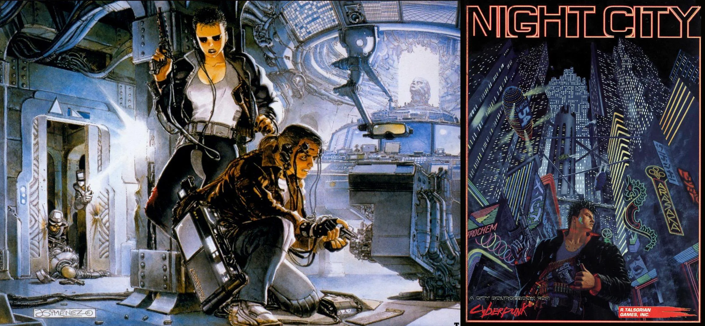
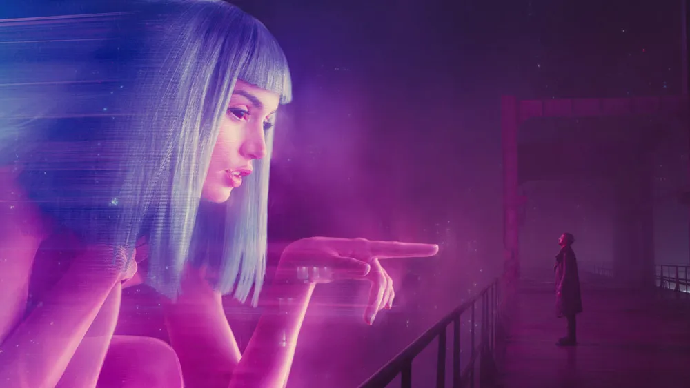
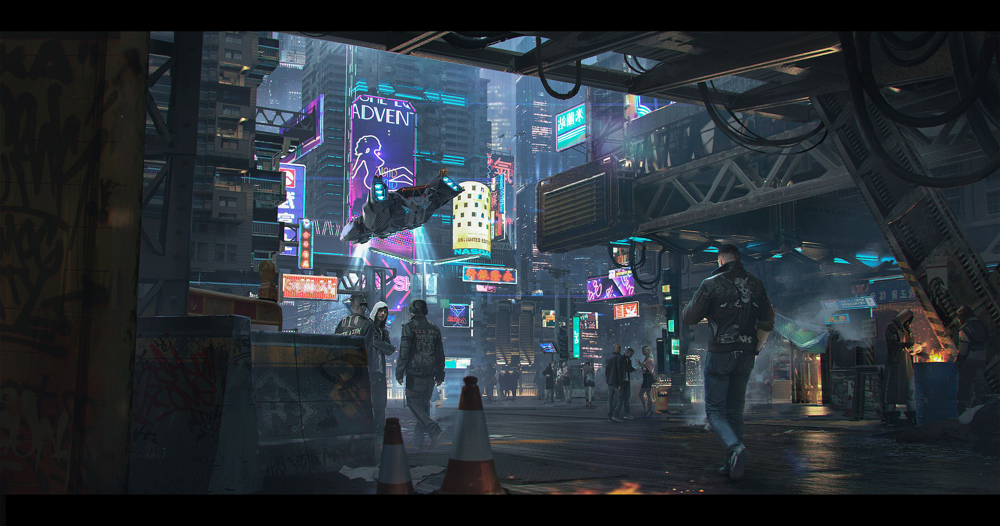
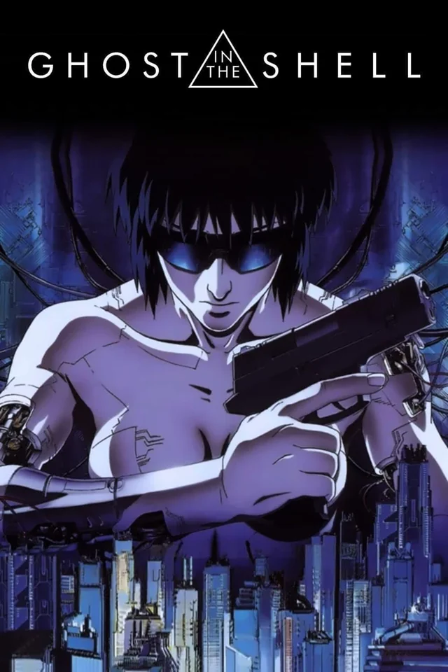
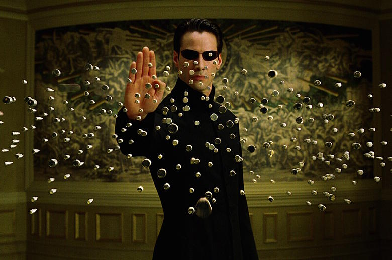

Introduction
Overview

Cyberpunk is a subgenre of science fiction in a dystopian futuristic setting said to focus on a combination of "low-life and high tech". It features futuristic technological and scientific achievements, such as artificial intelligence and cyberware, juxtaposed with societal collapse, dystopia or decay.
Orgins
The term "cyberpunk" was coined by author Bruce Bethke in his 1983 short story of the same name. The genre gained prominence with the release of seminal works such as William Gibson's novel "Neuromancer" in 1984, which established many of the genre's key themes and tropes.
History
Early Beginnings
Cyberpunk's roots can be traced to the New Wave science fiction movement of the 1960s and 1970s, which explored the impact of technology and the countercultural spirit of the times. Authors such as Philip K. Dick and J.G. Ballard influenced the tone and themes of what would later become cyberpunk.
Golden Age
The 1980s are often considered the golden age of cyberpunk. William Gibson, Bruce Sterling, and other authors helped define the genre with their focus on cybernetics, artificial intelligence, and the effects of a hyper-connected society.
Characteristics
High Tech, Low Life
The defining characteristic of cyberpunk is the juxtaposition of high technology with a breakdown in social order. The genre frequently features themes such as corporate control, hacker culture, artificial intelligence, and cybernetic augmentation.
Dystopian Settings
Cyberpunk stories are often set in dystopian futures with pervasive surveillance, megacorporations, and urban decay. The setting plays a crucial role in emphasizing the alienation and struggles faced by the protagonists.
Influences
Science Fiction Literature
Cyberpunk draws influence from earlier science fiction works, particularly those that focus on the relationship between humanity and technology. Authors such as Isaac Asimov and H.G. Wells laid the groundwork for cyberpunk's exploration of artificial intelligence and human-machine interaction.
Film and Media
Films like "Blade Runner" (1982) have had a profound impact on the visual and thematic elements of cyberpunk. The aesthetic of neon lights, rain-soaked streets, and sprawling metropolises has become synonymous with the genre.
Notable Works
Literature
Key works in the cyberpunk genre include "Neuromancer" by William Gibson, "Snow Crash" by Neal Stephenson, and "Altered Carbon" by Richard K. Morgan. These novels explore themes of cyberspace, virtual reality, and identity in a technological age.
Film and Television
Notable films include "Blade Runner", "The Matrix", and "Ghost in the Shell". These works have helped popularize cyberpunk's themes of virtual reality, artificial intelligence, and rebellion against oppressive systems.
Legacy and Impact
Influence on Popular Culture

Cyberpunk has had a lasting influence on popular culture, inspiring video games, films, and television series. The genre's visual style and thematic concerns continue to resonate in works such as "Cyberpunk 2077" and "Altered Carbon".
Criticism and Evolution
While cyberpunk was initially a reaction to the technological optimism of earlier science fiction, the genre has evolved over time. Critics have noted its tendency to romanticize certain aspects of dystopia, while new works explore more diverse perspectives within the cyberpunk framework.